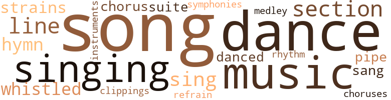
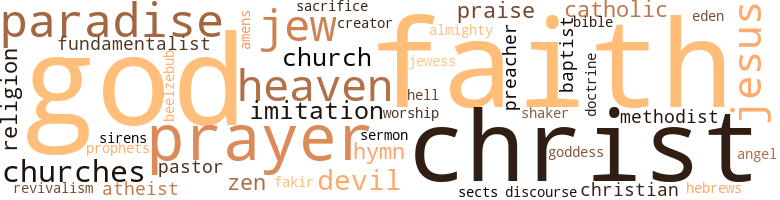

Black No More: Being an Account of the Strange and Wonderful Workings of Science in the Land of the Free, A.D. 1933-1940, by Schuyler, George S. (1931)
81 music-related terms matched in this text.
Most frequent terms in this topic: song (11); dance (10); music (7); songs (7); singing (5)
chorus.n.01
Definition: any utterance produced simultaneously by a group
| word | sentence |
|---|---|
| chorus | All right , choir , you staht ; an ' when Ah wave mah han ' you'all join in on that theah chorus . " |
| choruses | He thought of the Elks ' excursion every summer to Bear Moun - tain , the high yellow Minnie and her colorful apart - ment , the pleasant evenings at the Dahomey Casino doing the latest dances with the brown belles of Harlem , the prancing choruses at the Lafayette Theater , the hours he had whiled away at Boogie 's and the Honky Tonk Club , and he hesitated . |
| chorus | Then they went to a cabaret , where , amid smoke , noise and body smells , they drank what was purported to be whis - key and watched a semi-nude chorus do its stuff . |
clipping.n.01
Definition: an excerpt cut from a newspaper or magazine
| word | sentence |
|---|---|
| clippings | " Just look at this bunch of clippings we got in this morning . |
dance.n.01
Definition: an artistic form of nonverbal communication
| word | sentence |
|---|---|
| dance | He felt that he would give anything for just one dance with her . |
| dance | Bunny wanted to go to the breakfast dance at the Dahomey Casino but Max was in no mood for it . |
| dance | A cur - rent popular dance piece , " The Black Man Blues , " was filling the room . |
| dance | He rose hurriedly , paid for his breakfast , rushed out of the door , almost ran into an aged white man carrying a sign advertising a Negro fraternity dance , and strode , almost ran , to the Phyllis Wheat - ley Hotel . |
| dances | He thought of the Elks ' excursion every summer to Bear Moun - tain , the high yellow Minnie and her colorful apart - ment , the pleasant evenings at the Dahomey Casino doing the latest dances with the brown belles of Harlem , the prancing choruses at the Lafayette Theater , the hours he had whiled away at Boogie 's and the Honky Tonk Club , and he hesitated . |
| dance | For nearly three months he had idled around the Georgia capital hoping to catch a glimpse of the beautiful girl who on New Year 's Eve had told him " I neyer dance with niggers . " |
dance.v.03
Definition: skip, leap, or move up and down or sideways
| word | sentence |
|---|---|
| dance | The two men and two of the women at the next table rose to dance . |
| dance | " I 'm going over and ask her to dance , " Max sud - denly announced to the surprised Bunny . |
| dance | '' Would you care to dance ? " he asked , after.a moment 's hesitation . |
| dance | " No , " she said icily , " I never dance with nig - gers ! " |
| dance | " I never dance with niggers . " |
| danced | They dined and they danced . |
| danced | In and out among the tables danced the waiters , trays balanced aloft , while the patrons , arrayed in colored paper caps , beat time with the orchestra , threw streamers or grew maudlin on each other 's shoulders . |
hymn.n.01
Definition: a song of praise (to God or to a saint or to a nation)
| word | sentence |
|---|---|
| hymns | He entered the house humming one of his favorite hymns and his wife looked up from the evening paper with surprise on her face . |
| hymn | As the beefy song leader led the roaring of the popular closing hymn , he leaned toward the Im - perial Grand Wizard and shouted : " Who is that tall golden-haired girl sitting in the front row ? |
| hymn | Then he again launched into a hymn composed on the spot : " He will send the Sign , Oh , He will send the Sign Loving Little Jesus Christ He will send the Sign . |
medley.n.01
Definition: a musical composition consisting of a series of songs or other musical pieces from various sources
| word | sentence |
|---|---|
| medley | In two seconds the blare of the jazz orchestra smote the ears of the unseen audience with the weird medley and clash of sound that had passed for music since the days of the Panama-Pacific Ex - position . |
music.n.01
Definition: an artistic form of auditory communication incorporating instrumental or vocal tones in a structured and continuous manner
| word | sentence |
|---|---|
| music | Gone was the almost European atmosphere of every Negro ghetto : the music , laughter , gaiety , jesting and abandon . |
| music | When the music ceased and the dancers returned to their tables , Bunny began to look around . |
| music | It was written by Johnny Gulp with music by the eminent Japanese - American composer , Forkrise Sake . |
| music | In two seconds the blare of the jazz orchestra smote the ears of the unseen audience with the weird medley and clash of sound that had passed for music since the days of the Panama-Pacific Ex - position . |
| music | No music was allowed besides singing and thumping the bottom of a wooden tub . |
| music | Their jests , scraps of conversation and lusty laughter all seemed like heavenly music . |
| music | Jus ' lissen to th ' sweet music of that mob out thrift ! |
musical_instrument.n.01
Definition: any of various devices or contrivances that can be used to produce musical tones or sounds
| word | sentence |
|---|---|
| instruments | Around the walls were cases of instruments and shelves of bottles filled with strangely colored fluids . |
pipe.n.04
Definition: a tubular wind instrument
| word | sentence |
|---|---|
| pipe | She alternately dipped snuff and smoked an evil-smelling clay pipe , except when there was company at the house . |
| pipes | They pulled out fat cigars , long slender cigarettes and London briar pipes , lit them and awaited the opening of the conference . |
refrain.n.01
Definition: the part of a song where a soloist is joined by a group of singers
| word | sentence |
|---|---|
| refrain | The refrain was that Negro business - always anemic - was about to pass out entirely through lack of patronage . |
rhythm.n.04
Definition: the arrangement of spoken words alternating stressed and unstressed elements
| word | sentence |
|---|---|
| rhythm | They followed the rhythm accurately , effortlessly and with easy grace ; these lumbering couples , out of step half the time and working as strenuosly as stevedores emptying the bowels of a freighter , were noisy , awkward , inelegant . |
section.n.01
Definition: a self-contained part of a larger composition (written or musical)
| word | sentence |
|---|---|
| section | As the money flowed in , Matthew 's fame as a great organizer spread throughout the Southland , and he suddenly became the most desirable catch in the section . |
| section | When one-third of the population of the erst - while Confederacy had consisted of the much - maligned Sons of Ham , the blacks had really been of economic , social and psychological value to the section . |
| section | " What 's that ? " asked his assistant , looking up from the morning comic section . |
| section | It is a well-known fact among informed persons that a Negro from a given section speaks the same dialect as his white neighbors . |
| section | This section of the state had been untouched by the troubles through which the rest of the South had gone as a result of the activities of Black - No-More , Incorporated . |
sing.v.02
Definition: produce tones with the voice
| word | sentence |
|---|---|
| sang | A choir of assorted types of individuals sang " Onward Christian Soldiers " earnestly , vocifer - ously and badly . |
| sing | Ah 'm gon na ask the choir to sing th ' first and last verses ovah ag ' in , and when they come to th ' chorus , Ah wantcha to all join in . |
| sing | Jesus would n't be ' fraid to sing ' Onward Christian Soldiers , ' now would he ? |
| sing | Le 's sing that ole favorite what yo'all like so well : Tack Up Your Troubles in Your Old Kit Bag and Smile , Smile , Smile . |
| sing | Dr. Napoleon Wellington Jackson , sensing his oppor - tunity , began to sing a spiritual in his rich soprano voice . |
| sang | Over and over he sang the verse . |
singing.n.01
Definition: the act of singing vocal music
| word | sentence |
|---|---|
| singing | You have doubtless had the pleasure of singing some of the many sorrow songs he has written and popularized in the past twenty years , and you must know of his fame as a translator of Latin poets and his authoritative work on the Greek language . |
| singing | No music was allowed besides singing and thumping the bottom of a wooden tub . |
| singing | The holy man would begin an extemporaneous song and would soon have the faithful singing it after him and swinging from side to side in unison . |
| singing | As they started toward the little settlement , they heard shouts and singing on their left . |
| singing | They struck off over the fields toward the sound of the singing . |
song.n.01
Definition: a short musical composition with words
| word | sentence |
|---|---|
| song | They were about to file off the platform when the song leader , a big , beefy , jovial mountain of a man , leaped upon the stage and restrained them . |
| song | He wo n't be satisfied with jus ' one ole measly song . |
| song | He made them rise and grasp each other by the hand until the song ended . |
| song | As the beefy song leader led the roaring of the popular closing hymn , he leaned toward the Im - perial Grand Wizard and shouted : " Who is that tall golden-haired girl sitting in the front row ? |
| songs | A black-faced comedian , a corpulent shouter of mammy songs with a gin-roughened voice , three chocolate soft-shoe dancers and an octette of wriggling , practically nude , mulatto chorines . |
| song | The happy-go-lucky Negro of song and story was gone forever and in his stead was a nervous , money-grubbing black , stuffing away coin in socks , impatiently awaiting a sufficient sum to pay Dr. Crookman 's fee . |
| songs | You have doubtless had the pleasure of singing some of the many sorrow songs he has written and popularized in the past twenty years , and you must know of his fame as a translator of Latin poets and his authoritative work on the Greek language . |
| songs | " The old songs are the best songs , " she wise - cracked . |
| songs | " The old songs are the best songs , " she wise - cracked . |
| song | The South had always been identified with the Negro , and vice versa , and its most pleasant memories treasured in song and story , were built around this pariah class . |
| songs | The songwriters had been making a fortune recently writing sentimental songs about the passing of the Negro . |
| songs | Mr. Jack Albert , the well-known Broad - way singer and comedian , has kindly consented - to render his favorite among the popular songs of the day , ' Vanishing Mammy . ' |
| songs | I 'm terribly pleased to have the opportunity of starting off a program like this with one of the songs I have come to love best . |
| song | You know , I think a whole lot of this song . |
| song | Now , to end our program for the evening , friends , we are going to have a popular song by the well-known Goyter Sisters , lately of the State Street Follies , en - titled ' Why Did the Old Salt Shaker ' . . . The agitation of the Knights of Nordica soon brought action from the administration at Wash - ington . |
| song | The holy man would begin an extemporaneous song and would soon have the faithful singing it after him and swinging from side to side in unison . |
| song | Then , having concluded his story , the evangelist launched into song in a harsh , nasal voice : I I done come to Happy Hill to save you from Sin , Salvation 's door is open and you 'd better come in , Oh , Glory Hallelujah ! |
| song | A popular song , " Whiter Than White " was being whistled by the entire nation . |
suite.n.01
Definition: a musical composition of several movements only loosely connected
| word | sentence |
|---|---|
| suite | " How is our treasury ? " he yelled back through the dingy suite of offices to his bookkeeper , a pretty mulatto . |
| suite | It was a big , unpainted barn-like edifice , with a suite of offices in front and a huge auditorium in the rear . |
symphony.n.01
Definition: a long and complex sonata for symphony orchestra
| word | sentence |
|---|---|
| symphonies | During his leisure time , which was naturally considerably he wrote long and learned articles , bristling with references , for the more intellectual magazines , in which he sought to prove conclusively that the plantation shouts of Southern Negro peons were superior to any of Beethoven 's symphonies and that the city of Benin was the original site of the Gar - den of Eden . |
tune.n.01
Definition: a succession of notes forming a distinctive sequence
| word | sentence |
|---|---|
| lines | Her once flaming red hair was turning gray and roan - like , her hatchet face was a criss-cross of wrinkles and lines , she was round-shouldered , hollow - chested , walked with a stoop and her long , bony , white hands looked like claws . |
| line | " Naow sum o ' us was thinkin ' that maybe yo'all might be able to he ' p us keep these damn hicks in line . |
| strains | He claimed ; that such a nationwide investigation would disclose the various non-Nordic strains in the population . |
| strains | Laws , said he , should then be passed forbidding these strains from mixing or marrying with the pure strains that had produced such fine specimens of mankind as Mr. Snobbcraft and himself In high falsetto voice he eagerly related to the directors of the Anglo-Saxon Association the re-sults of some of his preliminary researches . |
| strains | Laws , said he , should then be passed forbidding these strains from mixing or marrying with the pure strains that had produced such fine specimens of mankind as Mr. Snobbcraft and himself In high falsetto voice he eagerly related to the directors of the Anglo-Saxon Association the re-sults of some of his preliminary researches . |
| line | Down one side of it was a long line of nicks made with hammer and chisel . |
| line | He glanced in a superior manner at the long line of black and brown folk on one side of the corridor , patiently awaiting treatment . |
| line | A long queue of Negroes extended down one side of the bank , out of the front door and around the cor - ner , while bank attendants struggled to keep them in line . |
whistle.v.01
Definition: make whistling sounds
| word | sentence |
|---|---|
| whistled | The headline almost knocked him down : WEALTHY WHITE GIRL HAS NEGRO BABY He whistled softly and muttered to himself , " Business picks up from now on . " |
| whistled | He thought of Matthew 's marriage and whistled again . |
| whistled | A popular song , " Whiter Than White " was being whistled by the entire nation . |
105 violence-related terms matched in this text.
Most frequent terms in this topic: fight (7); fought (6); fighting (4); hatred (4); rage (4)
aggravation.n.02
Definition: unfriendly behavior that causes anger or resentment
| word | sentence |
|---|---|
| provocation | There was no doubt about it because she freely admitted it to everybody , with or with - out provocation . |
animosity.n.01
Definition: a feeling of ill will arousing active hostility
| word | sentence |
|---|---|
| animosity | Let not your hearts store up jealousy , hatred and animosity . |
assassinate.v.01
Definition: murder; especially of socially prominent persons
| word | sentence |
|---|---|
| assassinate | What do I have to do : assassinate the President ? " |
besiege.v.01
Definition: surround so as to force to give up
| word | sentence |
|---|---|
| besieging | Up from the South they came in increasing droves , besieging the Black-No-More sanitariums for treatment . |
| besieged | Long editorials were written about the discovery , learned societies besieged the Negro biologist with offers of lecture engagements , maga - zines begged him for articles , but he turned down all offers and refused to explain his treatment . |
boot.v.01
Definition: kick; give a boot to
| word | sentence |
|---|---|
| Booted | Booted and starved by their in - dustrial and agricultural feudal lords , the white masses derived their only consolation and happiness from the fact that they were the same color as their oppressors and consequently better than the mudsill blacks . |
bump.n.01
Definition: a lump on the body caused by a blow
| word | sentence |
|---|---|
| bumps | He turned and dashed out to the car , followed by the grim-looking Snobbcraft and the six uniformed watchmen with their tousled hair and sore bumps . |
contemn.v.01
Definition: look down on with disdain
| word | sentence |
|---|---|
| despised | In a very private inner office of the N. S. E. L. suite , Dr. Shakespeare Agamemnon Beard , founder of the League and a graduate of Harvard , Yale and Copenhagen ( whose haughty bearing never failed to impress both Caucasians and Negroes ) sat before a glass-topped desk , rubbing now his curly gray head , and now his full spade beard , a mere six thousand dollars a year , the learned doctor wrote scholarly and biting editorials in The Dilemma denouncing the Caucasians whom he secretly admired and lauding the greatness of the Negroes whom he alternately pitied and despised . |
| despised | On the contrary he despised and hated them . |
draw.v.23
Definition: pull (a person) apart with four horses tied to his extremities, so as to execute him
| word | sentence |
|---|---|
| drawn | Before the champion of the darker races lay a neatly typed resolution drawn up by him and his staff the day before and addressed to the Attorney General of the United States . |
erase.v.01
Definition: remove from memory or existence
| word | sentence |
|---|---|
| erasing | Matthew stopped bantering a mo - ment , a sincere look of pain erasing his usual ironic expression . |
fight.n.05
Definition: a boxing or wrestling match
| word | sentence |
|---|---|
| fight | Located in the Times Square district of Manhattan , it had for forty years carried on the fight for full social equality for the Negro citizens and the immediate abolition of lynching as a national sport . |
| Fights | Fights became mors fre - quent . |
| fight | It had been very largely a losing fight . |
| Fight | - to Join in the Fight for White Race Integrity . |
fight.v.02
Definition: fight against or resist strongly
| word | sentence |
|---|---|
| fought | On meager salaries of five thousand dollars a year they had fought strenuously and tirelessly to obtain for the Negroes the constitutional rights which only a few thousand rich white folk possessed . |
| fought | As a usual thing they fought each other with a vigor only surpassed by that of their pleas ra - cial solidarity and unity of action . |
| fought | Our people are forgetting shamelessly their-ah duty to the-ah organizations that have fought valiantly for them these-ah many years and are now busily engaged chasing a bally-ah will-o-the wisp . |
| fighting | He 's fighting Beard , Whooper , Spelling and that crowd . |
| fighting | Here you are fighting this Black-No-More , and so is Beard , Whooper , Gronne , Spelling and the rest of the Negro leaders , yet you have Licorice on the payroll to fight the same people that are fighting your enemy . |
| fight | Here you are fighting this Black-No-More , and so is Beard , Whooper , Gronne , Spelling and the rest of the Negro leaders , yet you have Licorice on the payroll to fight the same people that are fighting your enemy . |
| fighting | Here you are fighting this Black-No-More , and so is Beard , Whooper , Gronne , Spelling and the rest of the Negro leaders , yet you have Licorice on the payroll to fight the same people that are fighting your enemy . |
| fighting | Mr. Arthur Snobbcraft , President of the Anglo Saxon Association , an F.F.V. and a man suspiciously swarthy for an Anglo-Saxon , had devoted his en - tire life to fighting for two things : white racial integrity and Anglo-Saxon supremacy . |
| fought | " A successful campaign can not be fought this year , " Gay replied , " under twenty millions . " |
| fought | Matthew , wilted , worn but determined , fought for his chief . |
| fight | They 'll fight to get you , fight to keep you and fight you when they catch you playin ' around . |
| fight | They 'll fight to get you , fight to keep you and fight you when they catch you playin ' around . |
| fight | They 'll fight to get you , fight to keep you and fight you when they catch you playin ' around . |
| fight | But th ' kinda woman that wo n't fight for a man ai n't worth havin ' . " |
| fought | His illegitimate daughter married a free Negro who fought in the Revolutionary War . " |
firearm.n.01
Definition: a portable gun
| word | sentence |
|---|---|
| firearms | There were several more flashes from firearms . |
fracture.n.01
Definition: breaking of hard tissue such as bone
| word | sentence |
|---|---|
| break | Ai n't had a bad break sincen we stahted , an ' heah 't is th ' fust o ' September . " |
fury.n.01
Definition: a feeling of intense anger
| word | sentence |
|---|---|
| rage | Snobbcraft 's face was working with suppressed rage . |
| rage | " Stop ! " shouted Snobbcraft , the veins standing out on his narrow forehead and his voice trembling with rage . |
| rage | Sure enough , the little gray-faced , bald-headed man , came leaping up the stairs like a goat , his face haggard , his eyes bulging in mingled rage and terror , his necktie askew . |
| rage | His rage was so great that he could not speak for a moment or two . |
gun.n.01
Definition: a weapon that discharges a missile at high velocity (especially from a metal tube or barrel)
| word | sentence |
|---|---|
| gun | Matthew felt like a young soldier about to leave his trench to face a baptism of machine gun fire or a gambler risking his last dollar on a roll of the dice . |
| guns | A riot squad armed with rifles , machine guns and tear gas bombs maintained some semblance of order . |
hate.n.01
Definition: the emotion of intense dislike; a feeling of dislike so strong that it demands action
| word | sentence |
|---|---|
| hatred | Let not your hearts store up jealousy , hatred and animosity . |
| hatred | " Bunny , I 've learned something on this job , and that is that hatred and prejudice always go over big . |
| hatred | He was strong for steriliza - tion of the unfit : meaning Negroes , aliens , Jews and other riff raff , and he had an abiding hatred of democracy . |
| hatred | Im - mediately apology took the place of hatred . |
hate.v.01
Definition: dislike intensely; feel antipathy or aversion towards
| word | sentence |
|---|---|
| hated | Of course she often took the name of the Creator in vain when she got to quarreling with Henry ; she had the reputation among her friends of not always stating the exact truth ; she hated Negroes ; her spouse had made bitter and profane comment concerning her virginity on their wedding night ; and as head of the ladies ' auxiliary of the defunct Klan she had copied her husband 's financial methods ; but that she was a devout Chris - tion no one doubted . |
| detested | At the same time he was a frequent visitor to the Givens home , especially when Mrs. Givens , whom he heartily detested , was away . |
| hate | " I 'd hate to tell you , " replied Bonds , grinning and revealing his familiar tobacco-stained teeth . |
| hates | If he knows anything he 'll spill it because he hates that crowd . " |
| hate | " Oh , Bunny , I 'd hate to leave Helen . |
| hated | He hated to leave . |
| hated | On the contrary he despised and hated them . |
hostility.n.01
Definition: a hostile (very unfriendly) disposition
| word | sentence |
|---|---|
| hostility | There were none of these havens in the South because of the hostility of the bulk of white people but there were many all along the border between the two sections , at such places as Washington , D. C. , Baltimore , Cincinnati , Louis - ville , Evansville , Cairo , St. Louis and Denver . |
indignation.n.01
Definition: a feeling of righteous anger
| word | sentence |
|---|---|
| indignation | The young man glared with belligerent indignation . |
infuriate.v.01
Definition: make furious
| word | sentence |
|---|---|
| infuriated | The unreasoning and illogical color prejudice of most of the people with whom he was forced to associate , infuriated him . |
jealousy.n.01
Definition: a feeling of jealous envy (especially of a rival)
| word | sentence |
|---|---|
| jealousy | Let not your hearts store up jealousy , hatred and animosity . |
| jealousy | He never passed a Baptist , Methodist or Holy Roller church without jealousy and ambition surging up within him . |
kick_back.v.02
Definition: spring back, as from a forceful thrust
| word | sentence |
|---|---|
| kicked | The enthused villagers pinched them , pulled them , playfully punched and kicked them during their triumphant march . |
| kicked | They shook their fists in the two men 's faces , kicked them , tore off , their nondescript garments , searched their pockets and found cards and papers proving their identity , and but for the calmness and presence of mind , of the Rev. McPhule , the True Faith Christ Lovers wouId have torn the unfortunate men limb from limb . |
| kicked | Two years he had toiled on the roads under the hard eye and ready rifle of a cruel white guard ; two years of being beaten , kicked and cursed , of poor food and vermin-infested habitations ; two years for par - ticipating in a little crap game . |
kill.v.10
Definition: cause the death of, without intention
| word | sentence |
|---|---|
| killed | " Remember , " warned Bunny , mischievously , " curiosity killed the cat . " |
| kill | If we go down like we are , they 'll kill us sure . " |
| killing | Business , she thought to herself , was bad enough , what with all of the competition , without this Dr. Crookman coming along and killing it altogether . |
killing.n.02
Definition: the act of terminating a life
| word | sentence |
|---|---|
| killing | Politicians and business men shuddered at the thought of such a tragedy and saw horrible visions of old-age pensions , eight-hour laws , unemployment insurance , workingmen 's compensat-ion , minimum-wage legislation , abolition of child labor , dissemination of birth-control information , monthly vacations for female workers , two-month vacations for prospective mothers , both with hay , and the probable killing of individual initiative and incentive by taking the ownership of national capital out of the hands of two million people and putting it into the hands of one hundred and twenty million . |
| killing | I fear there will be rioting , shooting and killing . |
knife.n.02
Definition: a weapon with a handle and blade with a sharp point
| word | sentence |
|---|---|
| knives | The two men , vociferously protesting , were stripped naked , held down by husky and willing farm hands and their ears and genitals cut off with jack knives amid the fiendish cries of men and women . |
lynch.v.01
Definition: kill without legal sanction
| word | sentence |
|---|---|
| lynched | It read : Hope you arrive safely Senator Kretin lynched in Union Station Stop Snobbcraft and Buggerie reported in flight Stop Goosie and Gump almost unanimously reelected Stop Government has de - clared martial law until disturbances stop jSiop When can I come ? |
| lynch | " They 'll lynch us if they find out who we are . " |
| lynch | Too long had Happy Hill waited for a Negro to lynch . |
| lynch | do n't lynch white men . |
| lynched | They pulled out in airplanes last night or th ' mobs wouldda lynched 'em . " |
lynching.n.01
Definition: putting a person to death by mob action without due process of law
| word | sentence |
|---|---|
| lynching | Located in the Times Square district of Manhattan , it had for forty years carried on the fight for full social equality for the Negro citizens and the immediate abolition of lynching as a national sport . |
| lynching | Shines are too busy getting white to bother reading about lynching , crime and peonage , " said Bunny . |
| lynching | Other things of which the community might have boasted were its inor - dinately high illiteracy rate and its lynching record - but these things were seldom mentioned , although no one was ashamed of them . |
malice.n.01
Definition: feeling a need to see others suffer
| word | sentence |
|---|---|
| spite | The membership had grown by leaps and bounds , the treasury was bursting with money in spite of the Wizard 's constant misappropriation of funds , the regalia factory was running night and day and the influence of the order was becoming so great that Rev. Givens was beginning to dream of a berth in the White House or near by . |
| spite | Eagerly , in spite of their pain , both men tried to avail themselves of the opportunity . |
murder.n.01
Definition: unlawful premeditated killing of a human being by a human being
| word | sentence |
|---|---|
| murder | Or should he let the doctor murder the boy and then hope for a better situation the next time ? |
| murder | They 'll murder us all . " |
musket_ball.n.01
Definition: a solid projectile that is shot by a musket
| word | sentence |
|---|---|
| ball | Both Mr. Williams and Mr. Bonds had been unable to stomach the Democratic crowd and so had fallen in with the Republicans , who were as different from them as one billiard ball from an - other . |
| ball | He looked down worshipfully at the chubby , ball of brownness in the nurse 's arms . |
| ball | We just came from a masquerade ball over at Meridian and our plane wrecked . |
pain.v.02
Definition: cause emotional anguish or make miserable
| word | sentence |
|---|---|
| hurt | Getting white did n't hurt you none . " |
| hurt | The statistician agreed although it hurt him to the heart to forego any publicity . |
pistol.n.01
Definition: a firearm that is held and fired with one hand
| word | sentence |
|---|---|
| pistol | In the midst of this diatribe , the sound of auto - mobile horns and klaxons rent the air , punctuated by shouts and pistol shots . |
| pistol | The drone of the motor drowned out the sound of the approaching mob but the two fearful men saw several flashes that betokened pistol shots . |
punch.n.01
Definition: (boxing) a blow with the fist
| word | sentence |
|---|---|
| punch | They wanted a faith with more punch to it ; a faith that would fittingly accompany the fierce corn liquor which all consumed , albeit they were all confirmed Prohibitionists . |
repel.v.03
Definition: force or drive back
| word | sentence |
|---|---|
| repulse | Yes , one could afford to risk repulse for that . |
| repulsed | He was like most men who have been repulsed by a pretty girl , his desire for her grew stronger and stronger . |
resist.v.04
Definition: withstand the force of something
| word | sentence |
|---|---|
| stand | He reminded them that they were men and women ; that they were free , white and twenty-one ; that they were citizens of the United States ; that America was their country as well as Rockefeller 's ; that they must stand firm in the defense of their rights as working people ; that the worker was worthy of his hire ; that nothing should be dearer to them than the maintenance of white supremacy . |
rifle.n.01
Definition: a shoulder firearm with a long barrel and a rifled bore
| word | sentence |
|---|---|
| rifles | A riot squad armed with rifles , machine guns and tear gas bombs maintained some semblance of order . |
| rifle | Two years he had toiled on the roads under the hard eye and ready rifle of a cruel white guard ; two years of being beaten , kicked and cursed , of poor food and vermin-infested habitations ; two years for par - ticipating in a little crap game . |
riot.n.01
Definition: a public act of violence by an unruly mob
| word | sentence |
|---|---|
| riot | A riot squad armed with rifles , machine guns and tear gas bombs maintained some semblance of order . |
rioting.n.01
Definition: a state of disorder involving group violence
| word | sentence |
|---|---|
| rioting | I fear there will be rioting , shooting and killing . |
savageness.n.01
Definition: the property of being untamed and ferocious
| word | sentence |
|---|---|
| savagery | A Dr. Cutten Prodd wrote a book proving that all en - during gifts to society came from those races whose skin color was not exceedingly pale , pointing out that the Norwegians and other Nordic peoples had been in savagery when Egypt and Crete were at the height of their development . |
scimitar.n.01
Definition: a curved oriental saber; the edge is on the convex side of the blade
| word | sentence |
|---|---|
| Scimitar | He explained and snowed her a copy of The Scimitar containing his story . |
shoot.v.02
Definition: kill by firing a missile
| word | sentence |
|---|---|
| shoot | Then she tried to shoot me . |
| shot | As the flames shot upward , the dazed men , roused by the flames , strained vainly at the chains that held them . |
shooting.n.02
Definition: killing someone by gunfire
| word | sentence |
|---|---|
| shooting | I fear there will be rioting , shooting and killing . |
| shooting | " We must destroy the whole shooting match , " the big man announced as emphatically as possible for one . |
| shooting | The eminent statistician and author of The Incidence of Psittacosis among the Hiphopa Indians of the Amazon Valley and Its Relation to Life Insurance Rates in the United States , looked far from dignified with no necktie , canvas breaches , no socks and wearing a shooting jacket he had snatched from a closet on his way out of the house . |
shotgun.n.01
Definition: firearm that is a double-barreled smoothbore shoulder weapon for firing shot at short ranges
| word | sentence |
|---|---|
| shotguns | Then there was a nightmare of grim , gray men with shotguns , baying hounds , a heap of gasoline - soaked faggots and a screeching , fanatical mob . |
sic.v.01
Definition: urge to attack someone
| word | sentence |
|---|---|
| set | They had been suddenly set upon , the head watchman explained , about an hour before , just after Dr. Buggerie left , by a crowd of gunmen who had blackjacked them into unconsciousness and carried them into the building . |
| set | Finally he reached the curb , exhausted front the jostling and squeezing , only to be set upon by a mob of newspaper photographers and reporters . |
tomahawk.n.01
Definition: weapon consisting of a fighting ax; used by North American Indians
| word | sentence |
|---|---|
| hatchet | Her once flaming red hair was turning gray and roan - like , her hatchet face was a criss-cross of wrinkles and lines , she was round-shouldered , hollow - chested , walked with a stoop and her long , bony , white hands looked like claws . |
| hatchet | To a man they felt that it was time to bury the hatchet before they became too hungry to do any digging . |
torment.v.01
Definition: torment emotionally or mentally
| word | sentence |
|---|---|
| torture | They began to envision the time when they would no longer be able for the sake of the Negro race to suffer the hardships of lunching on canvasback duck at the Urban Club surrounded by the white dilettante , endure the perils of first-class Transatlantic passage to stage Save-Dear-Africa Conferences or undergo the Ex - cruciating torture of rolling back and forth across the United States in drawing-rooms to hear each other lecture on the Negro problem . |
| torture | Gone was the nappy hair that he had straightened so meticulously ever since the kink-no-more lotions first wrenched Aframericans from the tyranny and torture of the comb . |
violence.n.01
Definition: an act of aggression (as one against a person who resists)
| word | sentence |
|---|---|
| violence | Opposed as we always have been to mob violence as the worst enemy of democratic government , we can not help but feel that the intelligent white men and women of New York City who are intonated in the purity and preservation of their race should not permit the challenge of Crookmanism to go unanswered , even though these black scoundrels may be within the law . |
153 religion-related terms matched in this text.
Most frequent terms in this topic: God (15); Christ (13); faith (10); Paradise (8); prayers (6)
amen.n.01
Definition: a primeval Egyptian personification of air and breath; worshipped especially at Thebes
| word | sentence |
|---|---|
| amens | Rev. Herbert Gronne , face flushed and shouting amens , marched from one end of the room to the other ; Colonel Roberts , looking like an inebriated black-faced comedian , rocked back and forth clapping his hands ; the others began to groan and mean . |
atheist.n.01
Definition: someone who denies the existence of god
| word | sentence |
|---|---|
| atheist | The radical labor organizer , refused permission to use the Knights of Nordica Hall because he was a Jew , was prevented from holding a street meet - ing when someone started a rumor that he believed in dividing up property , nationalizing women , and was in addition an atheist . |
| atheist | One was too radical , another was too conservative , a third was an atheist , a fourth had once rifled a city treasury , the fifth was of immigrant extraction once removed , a sixth had married a Jewess , a sev - enth was an intellectual , an eighth had spent too long at Hot Springs trying to cure the syphilis , a ninth was rumored to be part Mexican and a tenth had at one time in his early youth been a Socialist . |
baptist.n.01
Definition: follower of Baptistic doctrines
| word | sentence |
|---|---|
| Baptist | He never passed a Baptist , Methodist or Holy Roller church without jealousy and ambition surging up within him . |
| Baptists | He began to talk in his meetings about , a sign coming down from Heaven to convince all doubters and infidels like Methodists and Baptists . |
bible.n.02
Definition: a book regarded as authoritative in its field
| word | sentence |
|---|---|
| bible | On the lectern downstage was a bulky bible . |
catholic.n.01
Definition: a member of a Catholic church
| word | sentence |
|---|---|
| Catholic | holding out for former Governor Grogan of Massa - chusetts who as head of the League of Catholic Voters had a great following . |
| Catholics | The propagandists and publicity men of the Democrats had so played upon the fears and prejudices of the public that even the bulk of Jews and Catholics were wavering and many had been won over to the support of a candidate who had denounced them but a few months before . |
| Catholic | He had really believed all that he had preached about white supremacy , race purity and the menace of the alien , the Catholic , the Modernist and the Jew . |
christian.n.01
Definition: a religious person who believes Jesus is the Christ and who is a member of a Christian denomination
| word | sentence |
|---|---|
| Christian | Mrs. Giveny was a Christian . |
| Christians | One thing about these people down here they are real , sincere Christians . " |
church.n.02
Definition: a place for public (especially Christian) worship
| word | sentence |
|---|---|
| churches | No longer did they flock to the churches on Sundays or pay dues in their numerous fraternal organiza - tions . |
| church | They all knew and respected the Right Reverend Bishop Ezekiel Whooper of the Ethiopian True Faith Wash Foot Methodist Church for three reasons : viz. , his church was rich ( though the parishioners were poor ) , he had a very loud voice and the white people praised him . |
| church | " Our loyal and devoted clergy , " he boomed , " are being forced into manual labor and the , Negro church is rapidly dying " and then he launched into a violent tirade against Black-No-More and favored any means to put the corporation out of business . |
| churches | But the people , eager for some - thing new , found all of the old churches too tame . |
| church | He never passed a Baptist , Methodist or Holy Roller church without jealousy and ambition surging up within him . |
church.n.04
Definition: the body of people who attend or belong to a particular local church
| word | sentence |
|---|---|
| Church | They all knew and respected the Right Reverend Bishop Ezekiel Whooper of the Ethiopian True Faith Wash Foot Methodist Church for three reasons : viz. , his church was rich ( though the parishioners were poor ) , he had a very loud voice and the white people praised him . |
| churches | There were several churches in the county , Methodist , Baptist , Campbellite and , of course , Holy Roller . |
| churches | The other churches , he averred , had failed . |
| churches | The other churches had grown soft and were flirting with atheism and Modernism which , according to Rev. McPhule , were the same thing . |
| churches | He wanted to do God 's work so effectually that the other churches would be put out of business . |
curate.n.01
Definition: a person authorized to conduct religious worship
| word | sentence |
|---|---|
| pastor | Old man Yawbrew beat on his tub while the sisters swayed and accompanied their pastor . |
| pastor | Proudly their pastor looked on . |
doctrine.n.01
Definition: a belief (or system of beliefs) accepted as authoritative by some group or school
| word | sentence |
|---|---|
| doctrine | Mr. Spelling had for many years been the leading advocate of the strange doctrine that an underpaid Negro worker should go out of his way to patronize a little dingy Negro store instead of going to a cheaper and cleaner chain store , all for the dubious satisfaction of helping Negro merchants grow wealthy . |
eden.n.01
Definition: any place of complete bliss and delight and peace
| word | sentence |
|---|---|
| heaven | Once around the floor with her slim waist in his arm would be like an eternity in heaven . |
| Eden | During his leisure time , which was naturally considerably he wrote long and learned articles , bristling with references , for the more intellectual magazines , in which he sought to prove conclusively that the plantation shouts of Southern Negro peons were superior to any of Beethoven 's symphonies and that the city of Benin was the original site of the Gar - den of Eden . |
| heaven | " Dixie must be heaven . " |
| Paradise | ONE June morning in 1934 , Grand Exalted Giraw Fisher received a report from ore of his secret operatives in the town of Paradise , South Carolina , saying : " The working people here are talking , about going on strike next week unless Blickdoff and Hortzenboff , the owners of the Paradise Mill in - crease pay and shorten hours . |
| Paradise | ONE June morning in 1934 , Grand Exalted Giraw Fisher received a report from ore of his secret operatives in the town of Paradise , South Carolina , saying : " The working people here are talking , about going on strike next week unless Blickdoff and Hortzenboff , the owners of the Paradise Mill in - crease pay and shorten hours . |
| Paradise | They employ 1000 hands , own all of the houses in Paradise and operate all of the stores . |
| Paradise | The following evening the drab , skinny , hol - low-eyed mill folk trudged to the mass meeting called by Matthew in the only building in Paradise not owned by the company - the Knights of Nor - dica Hall . |
| Paradise | He slapped his thighs moun - taineer fashion , shifted his chew of tobacco from the right cheek to the left , his pale blue eyes twin - kling , and " allowed " to Matthew that the union would soon bring the Paradise Mill owners to terms . |
| Paradise | " Go to Paradise and devour stuff , " he commanded , " and do it right . " |
| Paradise | Soon all was quiet and orderly again in Paradise , S. C. On the advice of a conciliator from the United States Labor Department , Blickdoff and Hortzenboff , took immediate steps to make their workers more satisfied with their pay , their jobs and their little home town . |
| Paradise | Despite this inspiring message , it was apparent to everyone that Paradise would never be the same again . |
| Heaven | He could only do this , he knew , with the aid of a message straight from Heaven . |
| Heaven | He began to talk in his meetings about , a sign coming down from Heaven to convince all doubters and infidels like Methodists and Baptists . |
| heavens | He glanced up apprehensively at the blue heavens . |
| heaven | To Max it was like being in heaven . |
| heaven | They were all in evening dress and in their midst was a tall , slim , titian-haired girl who had seemingly stepped from heaven or the front cover of a magazine . |
fakir.n.01
Definition: a Muslim or Hindu mendicant monk who is regarded as a holy man
| word | sentence |
|---|---|
| fakir | He wondered if he could impress this old fakir as easily as he had the girl . |
fundamentalist.n.01
Definition: a supporter of fundamentalism
| word | sentence |
|---|---|
| Fundamentalists | " And how , " Rev. Whiffle chimed in , " can you get anywhere without the Fundamentalists and the Drys ? " |
| Fundamentalist | The people were proud of this fact They were more proud , however , of the fact that Happy Hill was the home and birthplace of the True Faith Christ Lovers ' Church , which made the prodigious boast of being the most truly Fundamentalist of all the Christian sects in the United States . |
god.n.03
Definition: a man of such superior qualities that he seems like a deity to other people
| word | sentence |
|---|---|
| God | They were getting away from God , that 's what they were , and she did n't like it . |
| God | For an hour Matthew told them at the top of his voice what they believed : i.e. , that a white skin was a sure indication of the possession of superior in - tellectual and moral qualities ; that all Negroes were inferior to them ; that God had intended for the United States to be a white man 's country and that with His help they could keep it so ; that their sons and brothers might inadvertently marry Ne - gresses or , worse , their sisters and daughters might marry Negroes , if Black-No-More , Incorporated , was permitted to continue its dangerous activities . |
| God | " Believe it or not , papa , it 's what God loves , " Matthew grinned . |
| God | That was sufficient to inflame the mill hands , although God had been strangely deaf to their prayers , they owned no property to divide and most of their women were so ugly that they need have had no fears that any outsiders would want to nationalize them . |
| God | Let us try to act and think as God would wish us to , and above all , let us , like those two kindly men yonder , practice Christian tolerance . " |
| God | In his long address he discussed the foundations of the Republic , anthropology , psy - chology , miscegenation , cooperation with Christ , getting right with God , curbing Bolshevism , the bane of birth control , the menace of the Modern - ists , science versus religion , and many other sub - jects of which he was totally ignorant . |
| God | I can see no way for us to fail , with God 's help . |
| God | Get down to brass tacks , man , for God 's sake . |
| God | " Turn on that God damned light ! " roared Snobbcraft . |
| God | " By God , we 're in a fix now , " said the president of the Anglo-Saxon Association . |
| God | An angel of God had visited him one summer evening in Meridian , he told them , when he was down sick in bed as the result of his sinning ways , and had told him to re - form and go forth into the world and preach the true faith of Christ 's love . |
| God | When the men were at work in the fields , the Man of God would visit house after house and comfort the womenfolk with his Christian mes - sage . |
| God | He wanted to do God 's work so effectually that the other churches would be put out of business . |
| God | God had indeed answered his prayers . |
| gods | As a boy he had been taught to look up to white folks as just a little less than gods ; now he found them little different from the Negroes , ex - cept that they were uniformly less courteous and less interesting . |
| God | He had helped in the organisa - tion of the Ku Klux Klan following the Great War and had worked with a zeal only equalled by his thankfulness to God for escaping from the precari - ous existence of an itinerant saver of souls . |
goddess.n.01
Definition: a female deity
| word | sentence |
|---|---|
| Goddess | The Goddess of the Nile weeps bitter tears at the feet of the Great Sphinx . |
godhead.n.01
Definition: terms referring to the Judeo-Christian God
| word | sentence |
|---|---|
| Creator | Of course she often took the name of the Creator in vain when she got to quarreling with Henry ; she had the reputation among her friends of not always stating the exact truth ; she hated Negroes ; her spouse had made bitter and profane comment concerning her virginity on their wedding night ; and as head of the ladies ' auxiliary of the defunct Klan she had copied her husband 's financial methods ; but that she was a devout Chris - tion no one doubted . |
| Almighty | Rev. McPhule began to wonder what be bad done to offend the Almighty . |
hebrew.n.01
Definition: the ancient Canaanitic language of the Hebrews that has been revived as the official language of Israel
| word | sentence |
|---|---|
| Hebrews | They were largely controlled by canny Hebrews , but at least a half-dozen were owned by Negroes . |
hell.n.01
Definition: any place of pain and turmoil
| word | sentence |
|---|---|
| Hell | Grim Irish from Hell 's Kitchen , rough Negroes from around 133rd Street and 5th Avenue ( New York 's " Beale Street " ) and tough Italians from the lower West Side . |
hymn.n.01
Definition: a song of praise (to God or to a saint or to a nation)
| word | sentence |
|---|---|
| hymns | He entered the house humming one of his favorite hymns and his wife looked up from the evening paper with surprise on her face . |
| hymn | As the beefy song leader led the roaring of the popular closing hymn , he leaned toward the Im - perial Grand Wizard and shouted : " Who is that tall golden-haired girl sitting in the front row ? |
| hymn | Then he again launched into a hymn composed on the spot : " He will send the Sign , Oh , He will send the Sign Loving Little Jesus Christ He will send the Sign . |
imitation.n.01
Definition: the doctrine that representations of nature or human behavior should be accurate imitations
| word | sentence |
|---|---|
| imitation | There was no way , apparently , of telling a real Caucasian from an imitation one . |
| imitation | Thousands of miles of streets located in the former Black Belts , and thus without sewers or pavement , were having to be improved at the insistent behest of the rapidly increased white population , real and imitation . |
| imitation | He held that the only way to tell the pure whites from the imitation whites , was to study their family trees . |
| Imitations | Imitations of Mrs. Blandine 's invention sprang up like weeds in a cemetery . |
jesus.n.01
Definition: a teacher and prophet born in Bethlehem and active in Nazareth; his life and sermons form the basis for Christianity (circa 4 BC - AD 29)
| word | sentence |
|---|---|
| Jesus | Jesus would n't be ' fraid to sing ' Onward Christian Soldiers , ' now would he ? |
| Jesus | Yuh caint slow up on Jesus now . |
| Jesus | When he had concluded " In the name of our Saviour and Redeemer , Jesus Christ , Amen , " he retired hastily to the washroom to finish his half - pint of corn . |
| Jesus | This was the '' Bible " of the Christ Lovers which the Rev. McPhule declared he had written at the command of Jesus Christ Himself . |
| Jesus | Jesus Christ has called me to save this white race , And with His Help I 'll save you from awful dis - grace . |
| Jesus | Then he again launched into a hymn composed on the spot : " He will send the Sign , Oh , He will send the Sign Loving Little Jesus Christ He will send the Sign . |
jew.n.01
Definition: a person belonging to the worldwide group claiming descent from Jacob (or converted to it) and connected by cultural or religious ties
| word | sentence |
|---|---|
| Jews | His fol - lowers are scarcer than Jews in the Vatican . " |
| Jew | The radical labor organizer , refused permission to use the Knights of Nordica Hall because he was a Jew , was prevented from holding a street meet - ing when someone started a rumor that he believed in dividing up property , nationalizing women , and was in addition an atheist . |
| Jews | He was strong for steriliza - tion of the unfit : meaning Negroes , aliens , Jews and other riff raff , and he had an abiding hatred of democracy . |
| Jews | The propagandists and publicity men of the Democrats had so played upon the fears and prejudices of the public that even the bulk of Jews and Catholics were wavering and many had been won over to the support of a candidate who had denounced them but a few months before . |
| Jew | He had really believed all that he had preached about white supremacy , race purity and the menace of the alien , the Catholic , the Modernist and the Jew . |
| Jews | On the other hand , many so-called Caucasians , particularly the Latins , Jews and South Irish , and frequently the most Nordic of peoples like the Swedes , show almost Negroid lips and noses . |
| Jew | There were hundreds of tall , beautiful , blonde maidens in the city ; to seek par - ticular one whose name one did not know somewhat akin to hunting for a Russian Jew in the Bronx or a particular Italian gunman in Chi - cago . |
jewess.n.01
Definition: a woman who is a Jew
| word | sentence |
|---|---|
| Jewess | One was too radical , another was too conservative , a third was an atheist , a fourth had once rifled a city treasury , the fifth was of immigrant extraction once removed , a sixth had married a Jewess , a sev - enth was an intellectual , an eighth had spent too long at Hot Springs trying to cure the syphilis , a ninth was rumored to be part Mexican and a tenth had at one time in his early youth been a Socialist . |
messiah.n.01
Definition: any expected deliverer
| word | sentence |
|---|---|
| Christ | " For Christ 's sake do n't call me Max , " cautioned Matthew . |
| Christ | Christ knows what he is doing and he will not permit his children to suffer . |
| Christ | In his long address he discussed the foundations of the Republic , anthropology , psy - chology , miscegenation , cooperation with Christ , getting right with God , curbing Bolshevism , the bane of birth control , the menace of the Modern - ists , science versus religion , and many other sub - jects of which he was totally ignorant . |
| Christ | When he had concluded " In the name of our Saviour and Redeemer , Jesus Christ , Amen , " he retired hastily to the washroom to finish his half - pint of corn . |
| Christ | His well-known work , The Fluctuation of the Sizes of Left Feet among the Assyrians during the Ninth Century before Christ had been favorably commented upon by several reviewers , one of whom had actually read it . |
| Christ | An angel of God had visited him one summer evening in Meridian , he told them , when he was down sick in bed as the result of his sinning ways , and had told him to re - form and go forth into the world and preach the true faith of Christ 's love . |
| Christ | The sisters and brothers osculated , embraced and rolled , shouting meanwhile : " Christ is Love ! |
| Christ | This was the '' Bible " of the Christ Lovers which the Rev. McPhule declared he had written at the command of Jesus Christ Himself . |
| Christ | This was the '' Bible " of the Christ Lovers which the Rev. McPhule declared he had written at the command of Jesus Christ Himself . |
| Christ | Jesus Christ has called me to save this white race , And with His Help I 'll save you from awful dis - grace . |
| Christ | Then he again launched into a hymn composed on the spot : " He will send the Sign , Oh , He will send the Sign Loving Little Jesus Christ He will send the Sign . |
| Christ | Then with a piercing scream , Rev. McPhule fell on all fours and running among the people hugged one after the other , crying " Christ is Love ! |
| Christ | Even so they were looked at rather sharply by some of the Christ Lovers because they did not appear to be enjoying the spectacle as thoroughly as the rest . |
methodist.n.01
Definition: a follower of Wesleyanism as practiced by the Methodist Church
| word | sentence |
|---|---|
| Methodist | He never passed a Baptist , Methodist or Holy Roller church without jealousy and ambition surging up within him . |
| Methodists | He began to talk in his meetings about , a sign coming down from Heaven to convince all doubters and infidels like Methodists and Baptists . |
praise.n.02
Definition: offering words of homage as an act of worship
| word | sentence |
|---|---|
| praise | " Now , " continued Dr. Crookman , " I want to say that Mr. Foster deserves great praise for the industry and ingenuity he has shown in purchasing our real estate and Mr. Johnson deserves equally great praise for the efficient manner in which he has kept down the opposition of the various city officials . |
| praise | " Now , " continued Dr. Crookman , " I want to say that Mr. Foster deserves great praise for the industry and ingenuity he has shown in purchasing our real estate and Mr. Johnson deserves equally great praise for the efficient manner in which he has kept down the opposition of the various city officials . |
| praise | Matthew received fulsome praise from the mem - bers of his organization and the higher-ups in the Southern Democracy . |
prayer.n.01
Definition: the act of communicating with a deity (especially as a petition or in adoration or contrition or thanksgiving)
| word | sentence |
|---|---|
| prayers | That was sufficient to inflame the mill hands , although God had been strangely deaf to their prayers , they owned no property to divide and most of their women were so ugly that they need have had no fears that any outsiders would want to nationalize them . |
| prayer | His flock was soon on the nervous edge of ex - pectancy but the Lord failed , for some reason , to answer the prayer of his right-hand man . |
| prayer | An angel of the Lord , he told the gaping villagers , had flown through the window , alighted on his " Bible " and , kissing him on his forehead , had declared that the Lord would answer his prayer and send assign . |
| prayers | Would the Lord answer his prayers ? |
| prayer | He muttered another prayer and then proceeded to business . |
| prayers | Oh , Little Jesus - ugh . . . Oh , God - ugh -- an - swer our prayers . . . Save us - ugh . |
| prayers | His prayers bad come true ! |
| prayers | Could the good people hesitate now that the Lord had answered their prayers ? |
| prayers | God had indeed answered his prayers . |
prayer.n.04
Definition: a fixed text used in praying
| word | sentence |
|---|---|
| prayer | Rev. Givens opened the meeting with a prayer " for the success , O God , of this thy work , pro- tect the sisters and wives and daughters of these , thy people , from the filthy pollution of an alien race . " |
| prayer | The Lord has an - swered my prayer ! |
preacher.n.01
Definition: someone whose occupation is preaching the gospel
| word | sentence |
|---|---|
| preachers | In his excitement he blew saliva , waved his long arms , stamped his feet , pummeled the desk , rolled his eyes , knocked down his chair , almost sat on the rug and generally reverted to the antics of Negro bush preachers . |
| preacher | The local Baptist preacher , who was very thoughtfully paid by the company with the un-derstanding that he would take a practical view of conditions in the community , told his flock their , employers were to be commended for adopting a real Christian and American way of settling the difficulties between them and their workers . |
prophet.n.02
Definition: someone who speaks by divine inspiration; someone who is an interpreter of the will of God
| word | sentence |
|---|---|
| Prophets | He had draped himself in a long , white robe with a great red cross on the left breast and he looked not un - like one of the Prophets of old . |
religion.n.01
Definition: a strong belief in a supernatural power or powers that control human destiny
| word | sentence |
|---|---|
| faith | " O , ye of little faith ! |
| religion | In his long address he discussed the foundations of the Republic , anthropology , psy - chology , miscegenation , cooperation with Christ , getting right with God , curbing Bolshevism , the bane of birth control , the menace of the Modern - ists , science versus religion , and many other sub - jects of which he was totally ignorant . |
| religion | Now there was nothing left to stimulate them but the old time religion and the clandestine sex orgies that invariably and immediately followed the great revival meetings . |
| religion | So the simple country folk had turned to religion with renewed ardor . |
| faith | They wanted a faith with more punch to it ; a faith that would fittingly accompany the fierce corn liquor which all consumed , albeit they were all confirmed Prohibitionists . |
| faith | They wanted a faith with more punch to it ; a faith that would fittingly accompany the fierce corn liquor which all consumed , albeit they were all confirmed Prohibitionists . |
| faith | One day , several weeks previously , there had come to the community one Rev. Alex McPhule who claimed to be the founder of a new faith , a true faith , that would save all from the machinations of the Evil One . |
| faith | One day , several weeks previously , there had come to the community one Rev. Alex McPhule who claimed to be the founder of a new faith , a true faith , that would save all from the machinations of the Evil One . |
| faith | An angel of God had visited him one summer evening in Meridian , he told them , when he was down sick in bed as the result of his sinning ways , and had told him to re - form and go forth into the world and preach the true faith of Christ 's love . |
| faith | No one had any difficulty in understands the new faith . |
| faith | As these torches always seemed to con - veniently burn out about the time the embracing and rolling started , the new faith rapidly became popular . |
| faith | If - ugh - you just have faith - ugh . |
| faith | Just have faith - ugh - and the Lord - ugh - will answer your prayers . . . Oh , Christ -- ugh . |
religion.n.02
Definition: an institution to express belief in a divine power
| word | sentence |
|---|---|
| Faith | They all knew and respected the Right Reverend Bishop Ezekiel Whooper of the Ethiopian True Faith Wash Foot Methodist Church for three reasons : viz. , his church was rich ( though the parishioners were poor ) , he had a very loud voice and the white people praised him . |
| Faith | Forborne days it had been preparing for the great , open-air revival of the True Faith Christ Lovers ' Church . |
| Faith | The people were proud of this fact They were more proud , however , of the fact that Happy Hill was the home and birthplace of the True Faith Christ Lovers ' Church , which made the prodigious boast of being the most truly Fundamentalist of all the Christian sects in the United States . |
| Faith | In the first row squatted the Happy Hill True Faith Choir of eight young women with grizzled old man Yawbrew , the tub - thumper , among them . |
| Faith | They shook their fists in the two men 's faces , kicked them , tore off , their nondescript garments , searched their pockets and found cards and papers proving their identity , and but for the calmness and presence of mind , of the Rev. McPhule , the True Faith Christ Lovers wouId have torn the unfortunate men limb from limb . |
revivalism.n.01
Definition: an attempt to reawaken the evangelical faith
| word | sentence |
|---|---|
| revivalism | Bishop Whooper was about to start up again , when Dr. Beard , who had sat cold and disdainful through this outbreak of revivalism , toying with his gold-rimmed fountain pen and gazing at the ex - hibition through half-closed eyelids , interrupted in sharp metallic tones . |
sacrifice.v.04
Definition: make a sacrifice of; in religious rituals
| word | sentence |
|---|---|
| sacrifice | " Personally , " he concluded , " I am very proud to be a Negro and always have been ( his greatgrand - father , it seemed , had been a mulatto ) , and I 'm willing to sacrifice for the uplift of my race . |
saint.n.02
Definition: person of exceptional holiness
| word | sentence |
|---|---|
| angel | He had promised to do so , of course , and then the angel had placed the palm of his right hand on Rev. McPhule 's forehead and all of the sickness and misery had departed . |
satan.n.01
Definition: (Judeo-Christian and Islamic religions) chief spirit of evil and adversary of God; tempter of mankind; master of Hell
| word | sentence |
|---|---|
| Devil | Very cleverly he linked up the Pope , the Yellow Peril , the Alien Invasion and Foreign En - tanglements with Black-No-More as devices of the Devil . |
| devil | How in the devil did this man know him ? |
| devil | Then turning angrily upon his friend , he growled , " Why in the devil did n't you find all of this out before ? " |
| devil | An angel of frankness beckoned him to be done with this life of pretense ; to take his wife and son and flee far away from everything , but a devil of ambition whispered seductively about wealth , power and prestige . |
| devil | How in the devil did you get so white ? " |
| Beelzebub | Imperial Klonklave Tonight The racial integrity of the Caucasian Race is being threatened by the activities of a scientific black Beelzebub in New York Let us Unite Now Before It Is TOO LATE ! |
sect.n.01
Definition: a subdivision of a larger religious group
| word | sentence |
|---|---|
| sects | The people were proud of this fact They were more proud , however , of the fact that Happy Hill was the home and birthplace of the True Faith Christ Lovers ' Church , which made the prodigious boast of being the most truly Fundamentalist of all the Christian sects in the United States . |
sermon.n.01
Definition: an address of a religious nature (usually delivered during a church service)
| word | sentence |
|---|---|
| discourse | Another white man of remote Negro ancestry , Rev. Herbert Gronne of Dunbar University , fol - lowed the research expert with a long discourse in which he expressed fear for the future of his in - stitution whose student body had been reduced to sixty-five persons and deplored the catastrophe " that has befallen us black people . " |
sermon.n.02
Definition: a moralistic rebuke
| word | sentence |
|---|---|
| sermon | Then he would break off abruptly and launch into a mold fashion hellfire-and-damnation sermon in which demons , brimstone , adultery , rum , and other evils prominently figured . |
shaker.n.02
Definition: a member of Christian group practicing celibacy and communal living and common possession of property and separation from the world
| word | sentence |
|---|---|
| Shaker | Now , to end our program for the evening , friends , we are going to have a popular song by the well-known Goyter Sisters , lately of the State Street Follies , en - titled ' Why Did the Old Salt Shaker ' . . . The agitation of the Knights of Nordica soon brought action from the administration at Wash - ington . |
siren.n.01
Definition: a sea nymph (part woman and part bird) supposed to lure sailors to destruction on the rocks where the nymphs lived
| word | sentence |
|---|---|
| sirens | The next night about eleven-thirty the bells be - gan to toll and the mournful sirens of the fire en - gines awakened the entire neighborhood in the vicinity of Rev. Givens 's home . |
worship.n.01
Definition: the activity of worshipping
| word | sentence |
|---|---|
| worship | Frequently these revivals took place on the darkest nights with the place of worship dimly illuminated by pine torches . |
zen.n.01
Definition: school of Mahayana Buddhism asserting that enlightenment can come through meditation and intuition rather than faith; China and Japan
| word | sentence |
|---|---|
| zen | Patrick Henry said ' Give me liberty or give me death ' and the true , red-blooded , 100 per cent American citi - zen says the same thing today . |
| zens | citi - zens to hear one of the most significant messages ever delivered to the American public . |
| zens | The literate deni - zens of Happy Hill would sometimes stand off and spell out the words with the pride that usually accompanies erudition . |